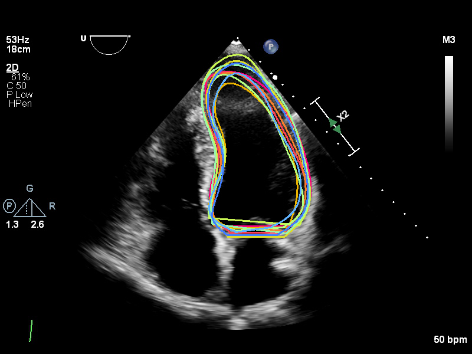

The external testing dataset, sourced from the Imperial College Healthcare NHS Trust, comprises 100 A4C echocardiography videos collected in 2019, three years after the completion of the original Unity project. This dataset features a balanced gender distribution, with 47% male and 53% female participants, and a median age of 60 years (interquartile range: 48.5–73.0). For each video, one end-diastolic (ED) frame and one end-systolic (ES) frame were extracted, resulting in a total of 200 images. These images were independently annotated by 11 experts, who were unaware of each other’s annotations. Consensus curves were generated by averaging the annotations, producing an average endocardial boundary for each of the 200 echo images, which were then designated as the Consensus dataset and used as ground-truth labels. This dataset serves as an independent external test set, fully separate from the Unity training, validation, and test datasets, ensuring its objectivity and integrity for evaluation purposes.
